Programarea robotului Shooterbot
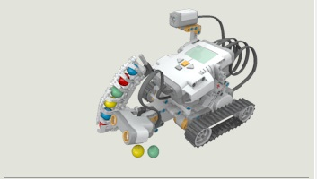In continuare va vom arata cum sa programati robotul ShooterBot!
II. Avansarea pana la linia rosie
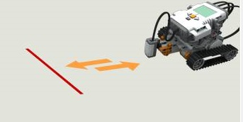
Deschideti programul Lego Mindstorms NXT 2.0.
Din Meniu, accesati File --> New.
Din Meniul "Common" din stanga, trageti pe ecran prima optiune ("Move") precum in figura de mai jos:
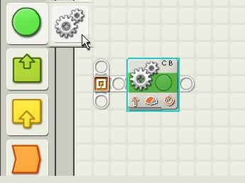
Dati click stanga pe ceea ce tocmai ati adaugat si, in partea de jos veti observa proprietatile casetei "Move".
Modificati atat proprietatea de Power sa fie 50, cat si cea de Duration sa fie "Unlimited", precum in imaginea de mai jos:
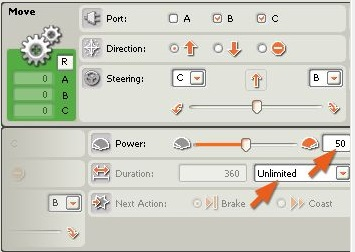
Din nou, din meniul "Common" din stanga, accesati ultima caseta de la "clepsidra Wait" precum in figura de mai jos:
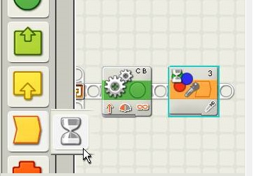
Acum, pentru aceasta noua caseta, va trebui sa selectati culoarea pe care doriti ca robotul sa o recunoasca precum in figura urmatoare:
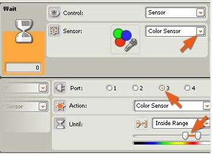
Din Meniul "Common" din stanga, trageti pe ecran prima optiune ("Move") precum in figura de mai jos:
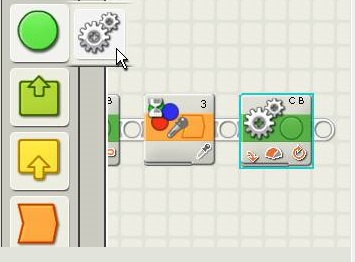
Acum, pentru noua caseta, va trebui sa modificati directia de rotatie, dar si durata ei, precum in figura de mai jos:
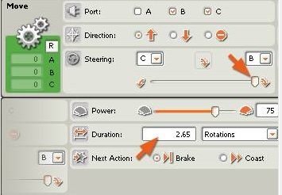
Din nou, din meniul "Common" din stanga, trageti pe ecran prima optiune ("Move") precum in figura de mai jos:
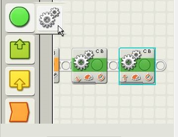
Acum, pentru noua caseta, va trebui sa modificati duratia astfel incat aceasta sa aiba perioada de viata egala cu 4 rotatii, precum in figura de mai jos:
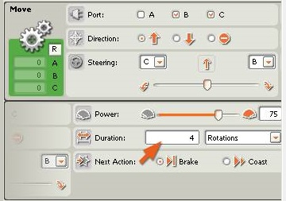
Conectati micro-controlerul NXT (rugati-o pe doamna profesoara sa va ajute) la calculator si apoi descarcati programul precum in figura de mai jos:
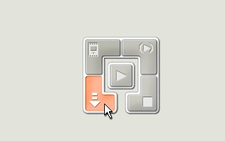
Effect: Robotul ar trebui sa se miste inainte pana la intalnirea linii rosii. In momentul in care detecteaza
linia rosie se va invarti si intoarce spre pozitia initiala.